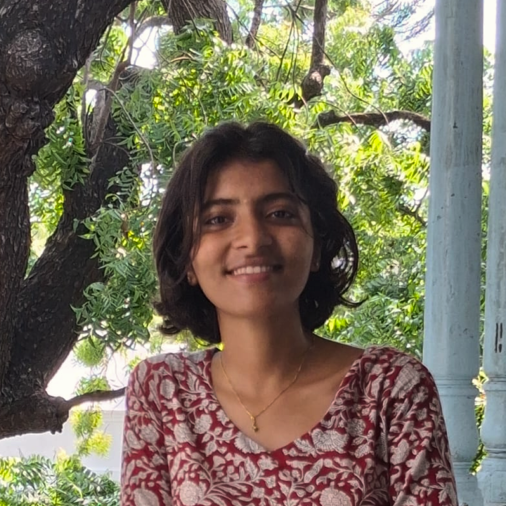
Hello, I am
Suraksha Jain
Junior Research Fellow · MST, IIT Madras
Exploring Machine Learning, AI for Healthcare, and the mathematical foundations behind intelligent systems.
#learning2teach
About Me
I am currently working as a Junior Research Fellow (JRF) in the Department of Medical Sciences and Technology (MST) at IIT Madras under the guidance of Prof. Rupsa Bhattacharjee. I hold a Bachelor's degree in Biotechnology and an M.Tech in Clinical Engineering from IIT Madras, and I am transitioning into Machine Learning and Artificial Intelligence.
I am particularly interested in the mathematical foundations of AI and Machine Learning and how these principles translate into practical algorithms and solutions. Through my research work, I am exploring their applications to healthcare-related problems.
My long-term goal is to pursue R&D in AI and Machine Learning for healthcare, bridging mathematical understanding, computational methods, and clinical applications to contribute to meaningful healthcare solutions.
Education
M.Tech in Clinical Engineering
IIT Madras • 2024 – 2026
B.E in Biotechnology
NMAM Institute of Technology • 2018 – 2022
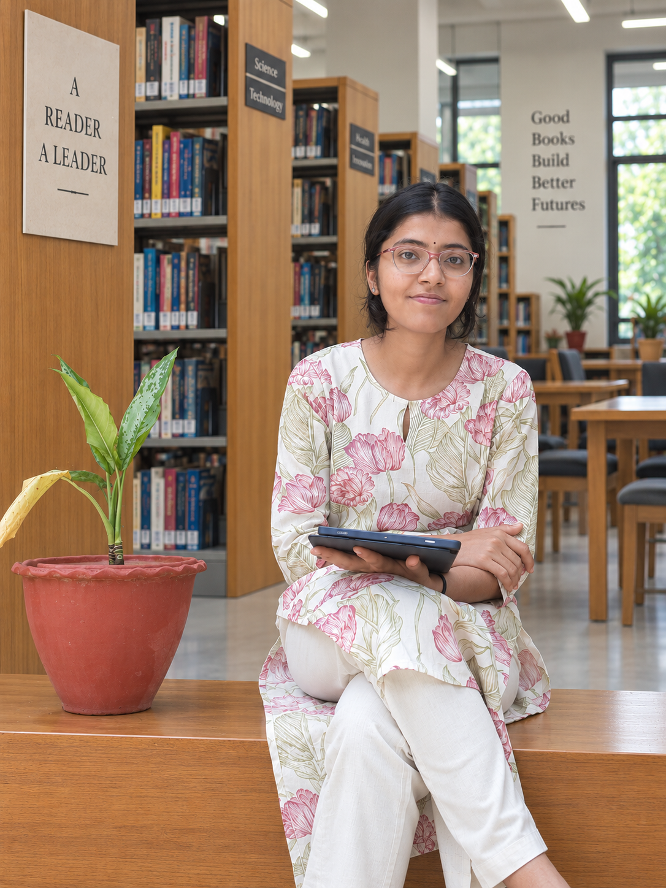
Educated & experienced with institutions like
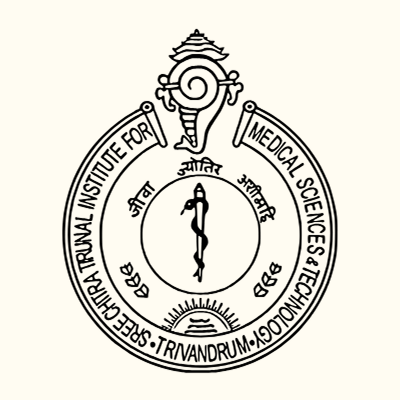
Knowledge & Skills
Currently focusing on building strong foundations in Machine Learning and Mathematics, while having prior experience working with engineering design, simulation, and software tools.
AI/ML & Mathematics
- Linear Algebra
- Single Variable Calculus
- Multi Variable Calculus
- Probability & Statistics
- Foundation of Machine Learning (FML)
- Optimization
- Mathematics for Data Science (MFDS)
Programming
- Python
- NumPy, Pandas
- Matplotlib
- Data Preprocessing
- Exploratory Data Analysis
- Model Evaluation Metrics
Biomedical & Biology
- Human Anatomy
- Physiology
- Pathology
- Medical Imaging
- Medical Device Design
Tools
- Jupyter Notebook
- Git & GitHub
- Google Colab
- VS Code
Engineering Design
- 3D Modelling (Creo, SketchUp)
- Engineering Design
- ANSYS (Simulation & Analysis)
- Product Development & Prototyping
General
- Problem Solving
- Analytical Thinking
- Technical Documentation
- Presentation Skills
Projects
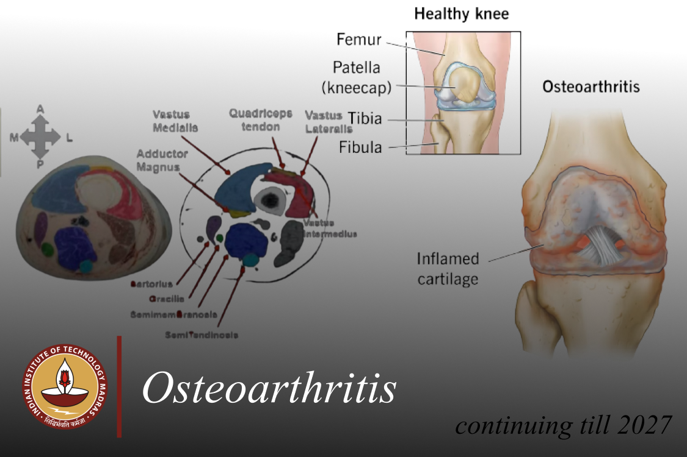
OnGoingJunior Research Fellow Project
Details to be updated......
Institute: IIT Madras
Type: JRF Project
Year: July 2026 – June 2027
Guide: Prof. Rupsa Bhattacharjee
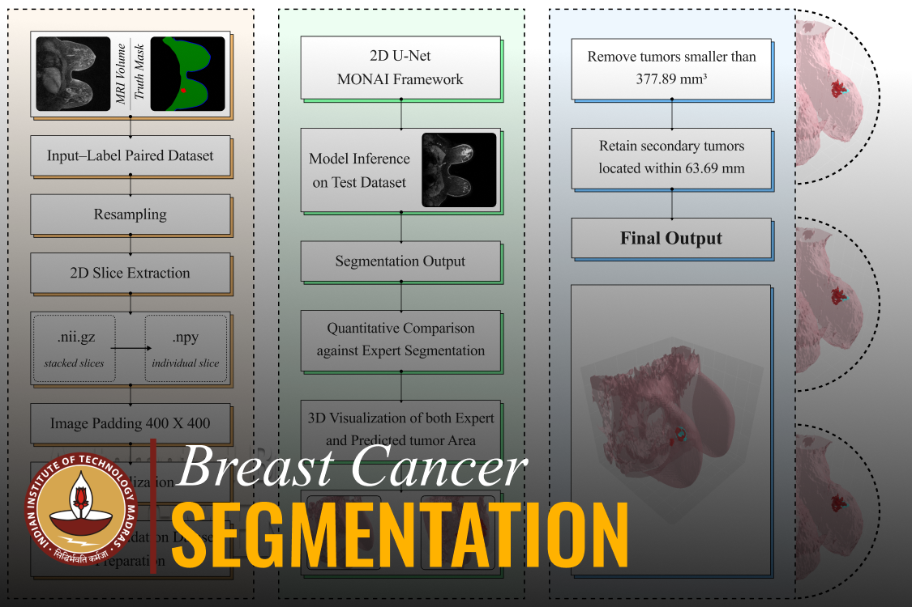
CompletedAutomated Breast Cancer Image Segmentation Using 2D U-Net and MONAI
Develop an efficient and reliable method to accurately segment breast tumor regions from MRI data for precise, targeted treatment while handling computational constraints and preserving spatial accuracy.
Institute: IIT Madras
Type: M.Tech Thesis
Year: 2026 | Final Semester
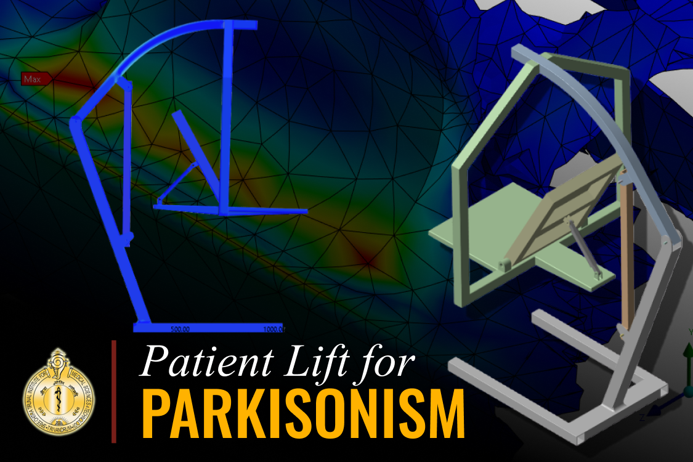
CompletedDesign and Finite Element Analysis of Modified Patient Lift for Locomotor Parkinsonism Rehabilitation
Developed a novel rehabilitation concept for the upper body of Parkinsonism patients, utilizing mechanical principles involving gears and linear actuators to enable controlled front-back and side-to-side movements.
Institute: SCTIMST
Type: Academic Project
Year: 2025 | Third Semester
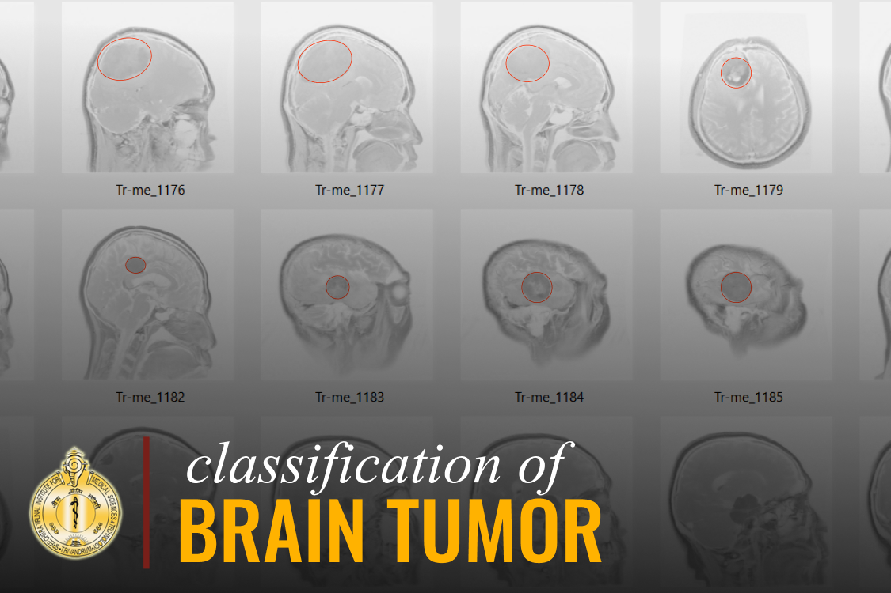
CompletedMRI Brain Tumor Classification Using Custom and Advanced CNN Models
Designed and implemented a CNN-based medical image analysis framework for automated brain tumor classification from MRI scans. Applied preprocessing, feature extraction, and multiclass classification techniques to support AI-assisted diagnostic decision-making.
Institute: SCTIMST
Type: Academic Project
Year: 2025 | Third Semester
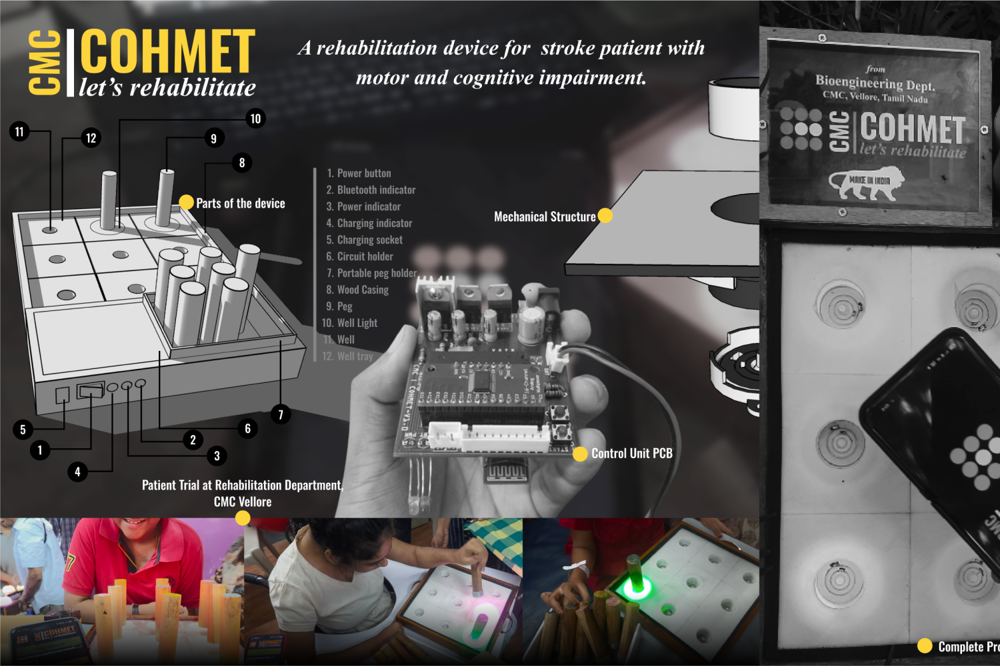
CompletedDigitally Augmented Occupational Therapy Pegboard for Cognitive–Motor Task Quantification (COHMET)
Smart rehabilitation system with sensors and real-time tracking for rehabilitation of stroke patients making the process of recovery more effective and quantifiable.
Institute: CMC Vellore
Type: Academic Project
Year: 2025 | Second Semester
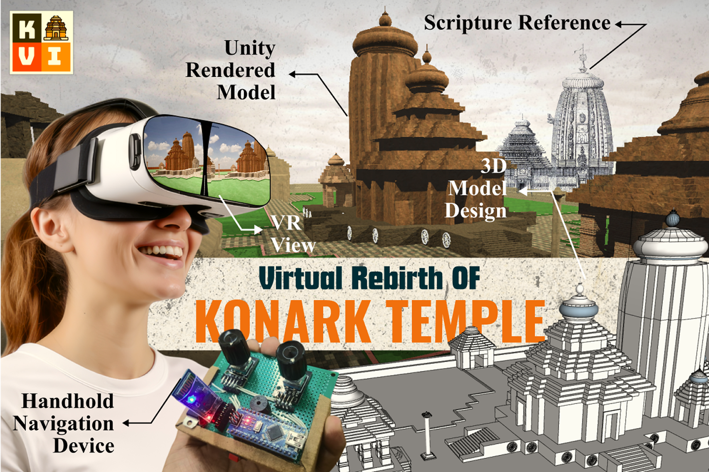
CompletedVirtual Rebirth of Konark Sun Temple (VR)
Built a Unity-based mobile VR experience with an ATmega328P + HC-05 based universal handheld controller for navigating in 3D space and reconstructing the Konark Sun Temple.
Institute: IIT Madras
Type: Course Project
Year: 2024 | First Semester
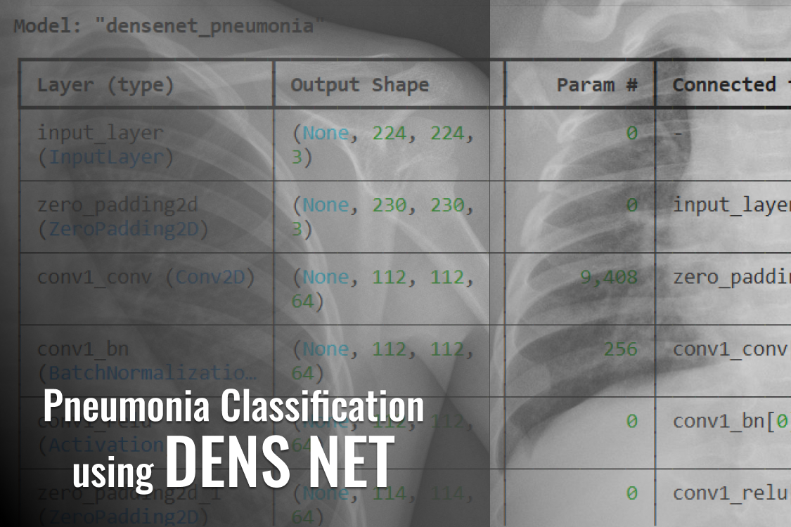
CompletedPneumonia Classification Using DenseNet201
This project focuses on classifying pneumonia from chest X-ray images using deep learning models such as DenseNet201.
Type: Self-Learning Project
Year: 2025
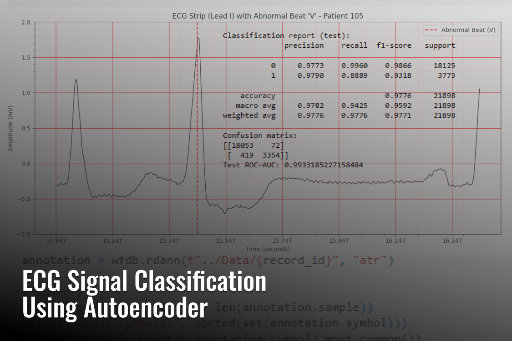
CompletedECG Signal Classification using Autoencoder-Based Feature Extraction
Developed a deep learning pipeline using a 1D convolutional autoencoder followed by machine learning classifiers for ECG classification.
Type: Self-Learning Project
Year: 2025
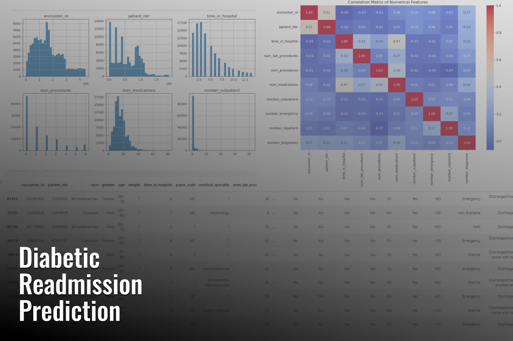
CompletedDiabetes Readmission Prediction using Machine Learning
Built a machine learning model to predict hospital readmission risk in diabetic patients using clinical and demographic data.
Type: Self-Learning Project
Year: 2025
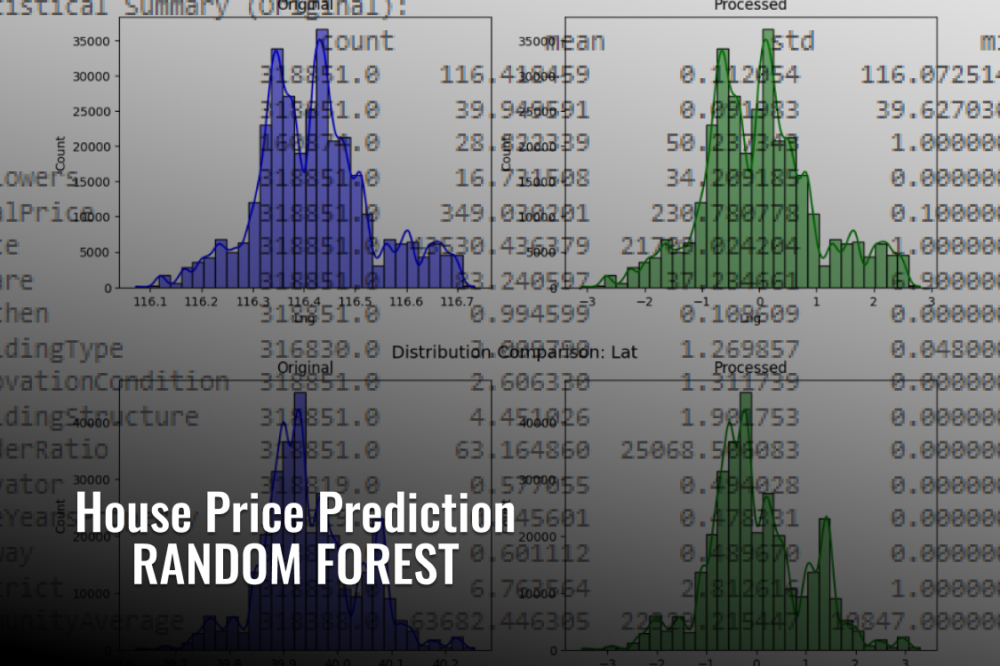
CompletedHouse Price Prediction using Random Forest
Developed a Random Forest based machine learning model to predict house prices using various housing features.
Type: Self-Learning Project
Year: 2025
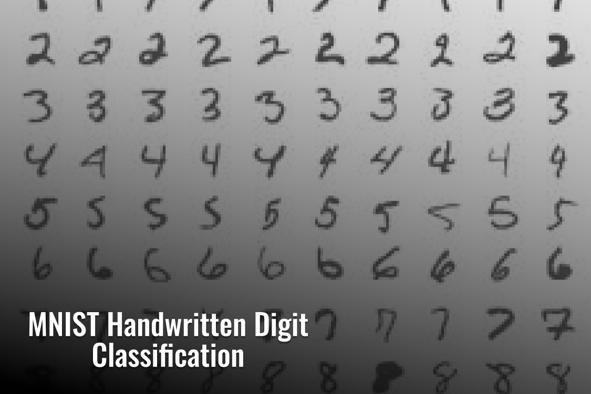
CompletedMNIST Handwritten Digit Classification using CNN
Designed and trained a CNN to accurately recognize handwritten digits from the MNIST dataset.
Type: Self-Learning Project
Year: 2025
Publications & Research Contributions
Digitally Augmented 3×3 Occupational Therapy Pegboard for Objective Cognitive–Motor Task Quantification (COHMET)
International Conference on Neurorehabilitation (ICNR 2026)
Research paper describing the design, development and validation of a rehabilitation platform for simultaneous cognitive and hand-motor rehabilitation with objective performance tracking.
Design and Finite Element Analysis of Modified Patient Lift for Locomotor Parkinsonism Rehabilitation
International Conference on Recent Trends in Materials Science & Devices 2026 (ICRTMD-2026)
Research work focused on the conceptualization, design, finite element analysis and rehabilitation application of a modified patient lift for Parkinsonism therapy.